Welcome to Boozy. We are going to explore the Boozy package. Unzip the package you will get 2 subfolders Documentation & Boozy.zip. Boozy.zip is your main file. Let's explore it.
Folders ->
- ajax-> All PHP files are stored here for mailing.
- css -> All CSS plugins, frameworks & custom CSS files.
- fonts -> Used icon fonts.
- images -> Logo, Favicon & other used images are here.
- js -> All third-party JS plugins and custom js files are here.
Files ->
- 3+ Home page.
- 6+ Blog Listing Pages.
- 3+ Blog Details Pages.
- 2+ Portfolio Pages.
- 1+ Service Pages.
- 1+ Service Details Pages.
- 1+ Case Studies Page.
- 1+ Career Page.
- 1+ About Us Page.
- 1+ Contact Page.
- 1+ FAQ Page.
- 1+ 404 Page.
As you know that HTML is not rocket science. It's always easy to customize. And we think Boozy is more easier to customize. Cause we coded it carefully. And this is well-commented coding. So let's start.
HTML Head:
 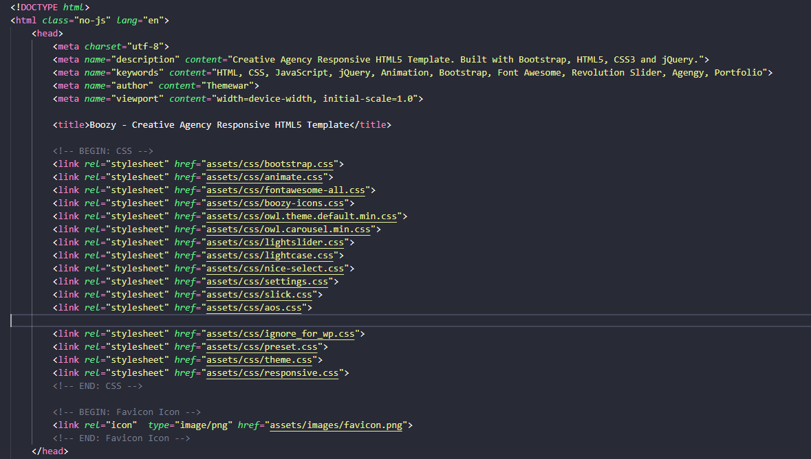
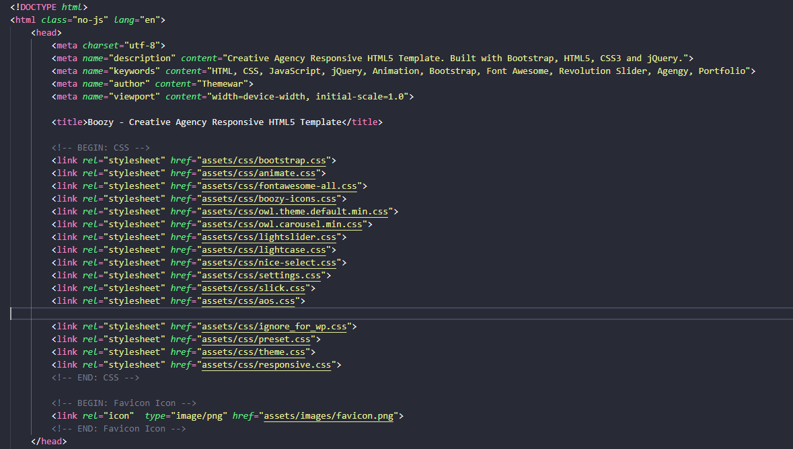
Here you can change your site Title, Meta information, CSS files & Favicon.
Preloader:
A single preloader has been used all over the template. We are going to show you the code. If you want you can disable it.
 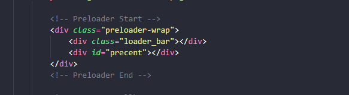
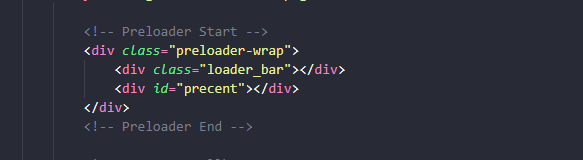
Header:
In Boozy we design 3 Unique headers. The first header is in index.html Second Header is in home-tow.html and the third header is in home-three.html.
 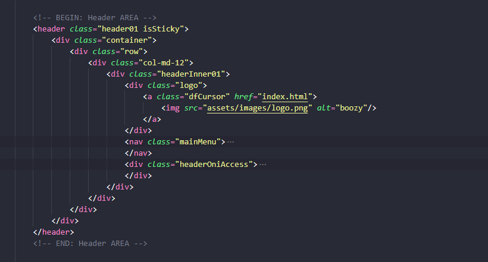
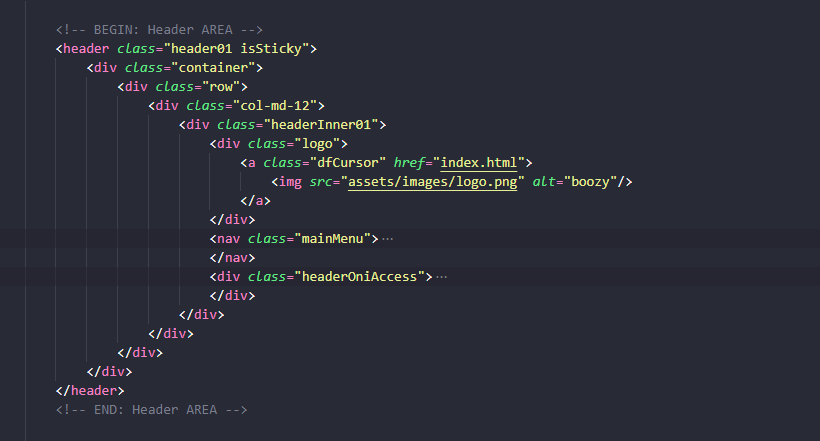
Slider:
We use the revolution slider in Boozy. Details documentation available https://www.themepunch.com/revsliderjquery-doc/slider-revolution-jquery-5-x-documentation/ here.
Let's see the First slider HTML. Here you can change your text, image, video, etc.
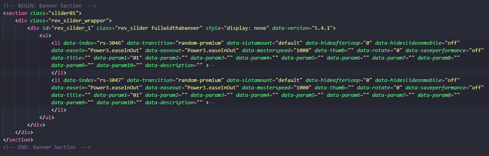
Footer:
In Boozy we design 3 Unique Footer. The first Footer is in index.html Second Footer is in home-tow.html and the third Footer is in home-three.html.
Let's see the first one.
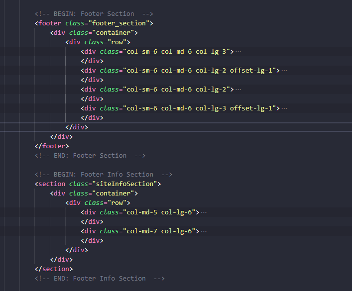
We using 4 main CSS files in this template
Path -> assets/css/preset.css
The first one is a generic reset file preset.css. Many browsers interpret the default behavior of HTML elements differently. By using a general preset CSS file, we can work around this. This file also contains some general styling, such as anchor tag colors, font sizes, etc. Keep in mind, that these values might be overridden somewhere else in the file.
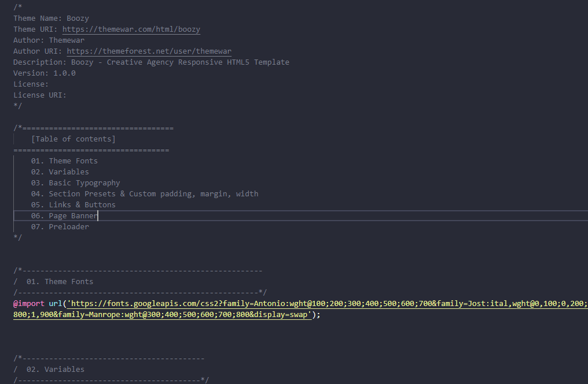
Path -> assets/css/theme.css
The second file contains all of the specific stylings for the page named theme.css. The file is separated into sections using comment.
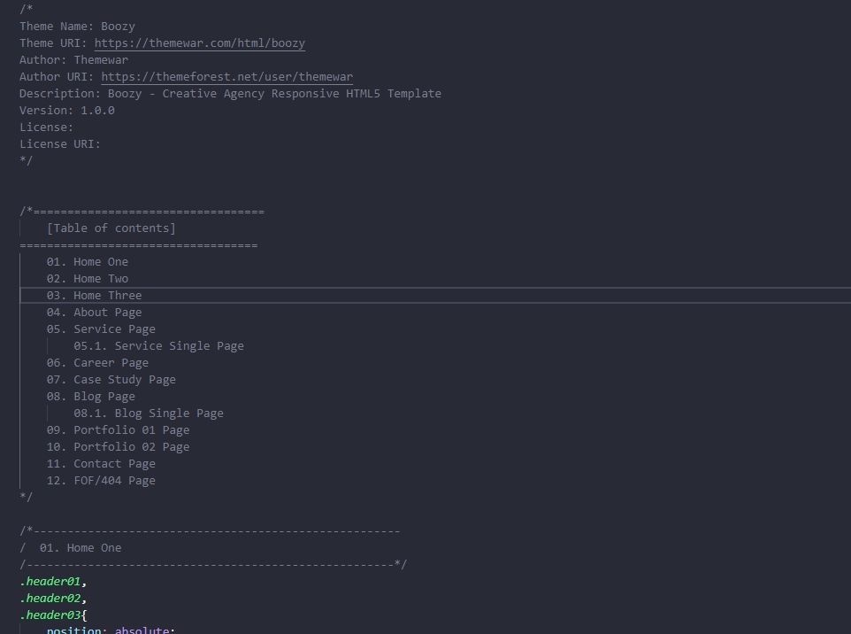
Path -> assets/css/responsive.css
And third file is for maintain responsiveness of the theme named responsive.css. The file separated with media queries.
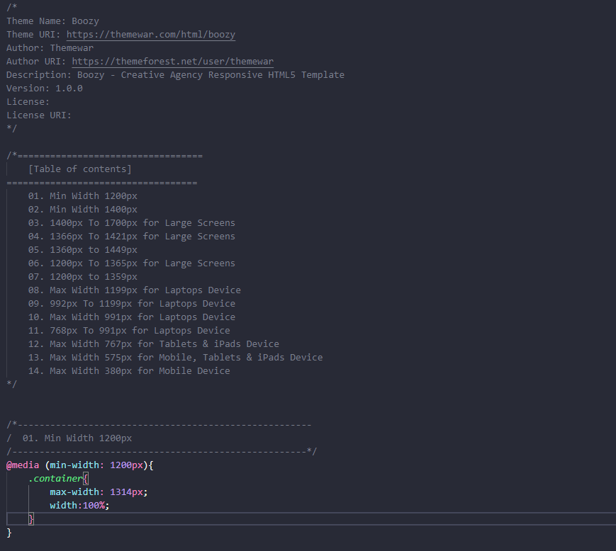
Path -> assets/css/ignore_for_wp.css
If you are want to convert this HTML into any CMS or any other platform then you can ignore this css file. Some extra code are written here those are not need in any cms development. Also you can keep it. Its up to you now.
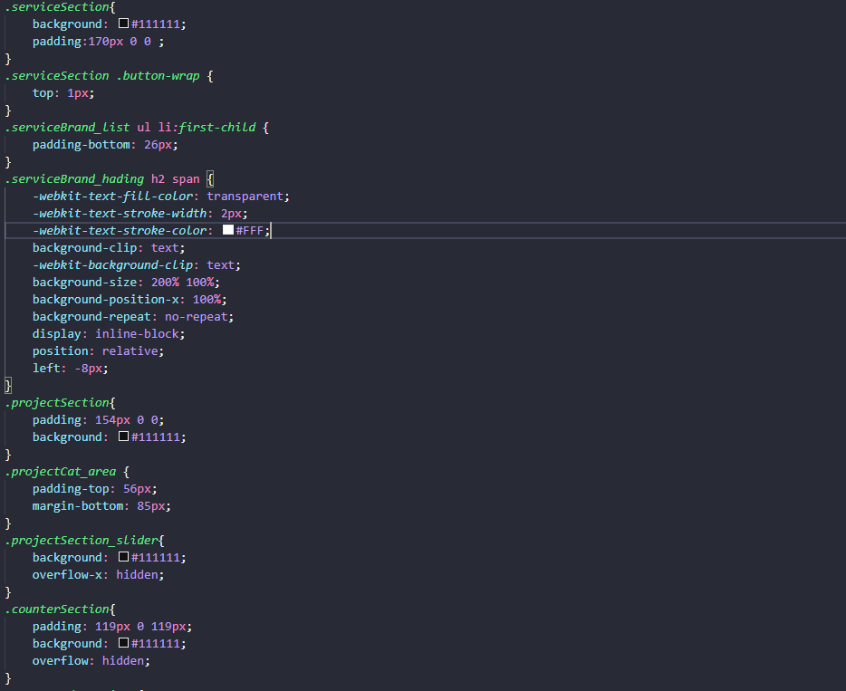
We used lots of JS third-party plugins. Here in Boozy, we write custom scripts in two files First file is theme.js and once another file name is common.js. File locate under assets/js/ folder. We are going to show you some important parts of our theme.js file.
All Revolution Slider ->
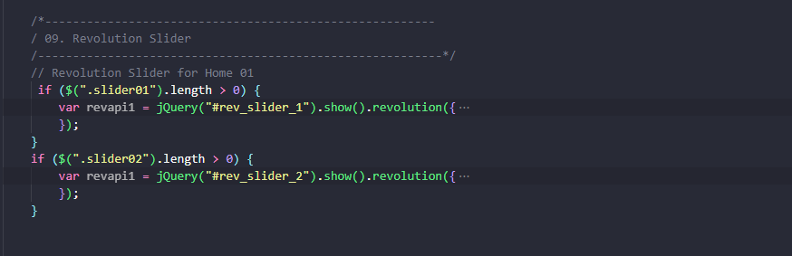
All Owl Carousel & Slick Slider->
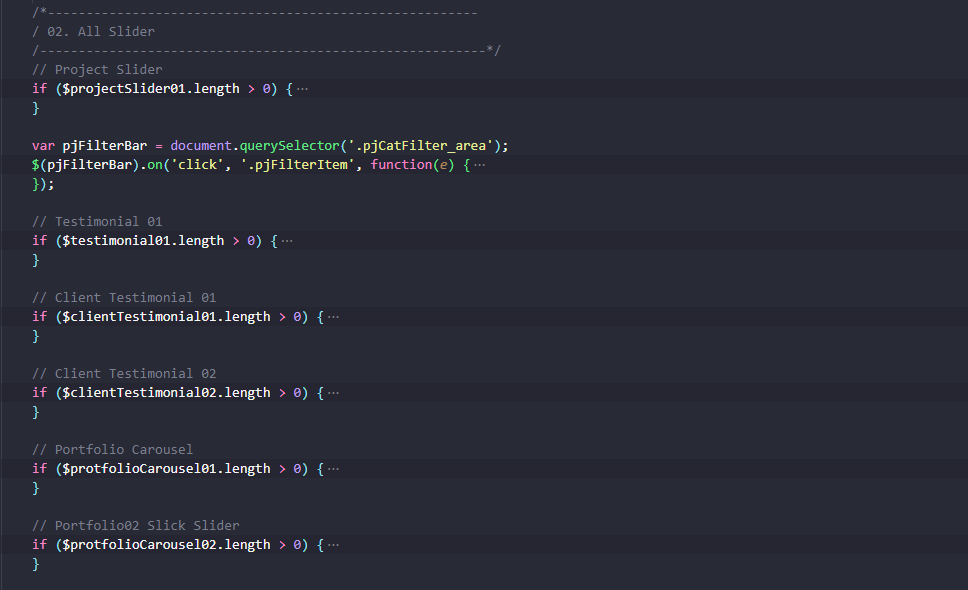
Contact Form->
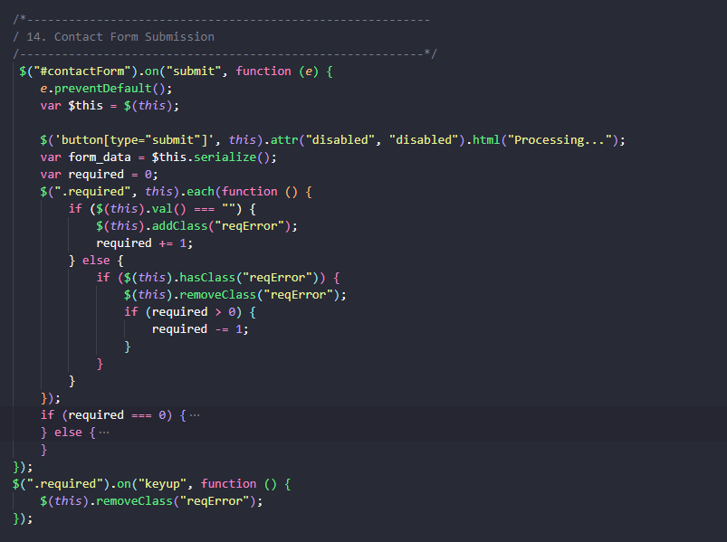
Aos ->
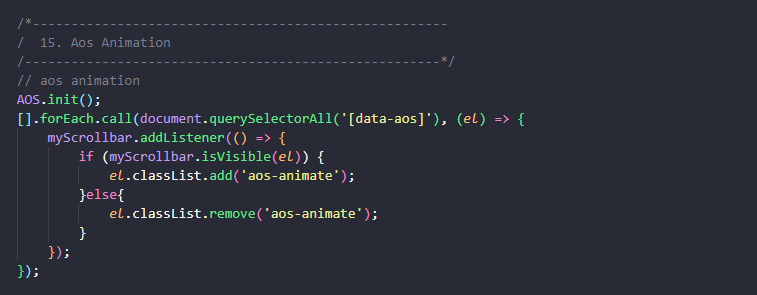
TypeWriter->
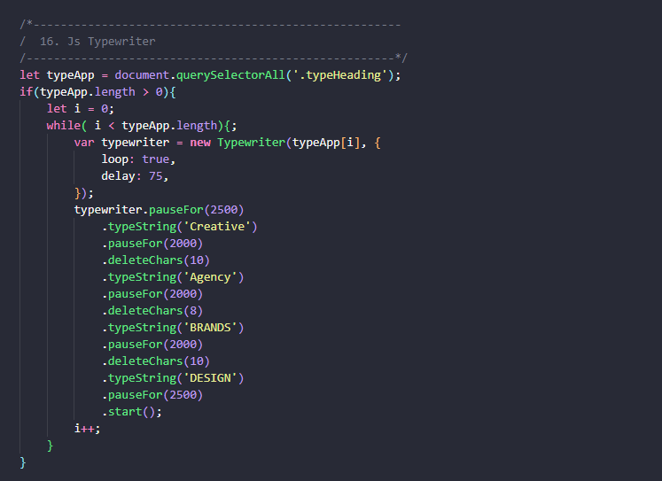
NOTE: We write some custom script code on the mouse animation in a common.js file. If you need any modification you can change it there.
Now I'm going to show a smooth scrollbar Code in the common.js file.
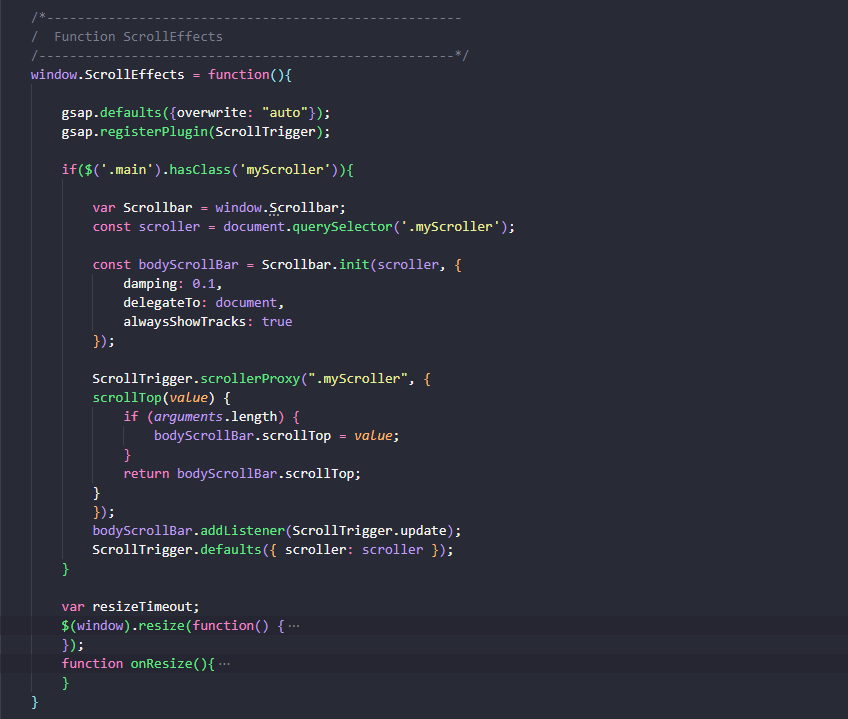
Only one PHP file is available in Boozy. It's for mailing. The files are located under the ajax folder. The file path is assets/ajax/mail.php
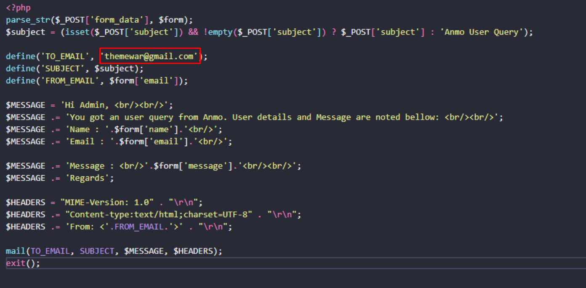
CSS Plugins ->
- Animate CSS
- Bootstrap
- Fontawesome Icons
- Aos Animation
- Light Case
- Slick
- Nice Select
JS Plugins ->
- Bootstrap
- slick
- Jquery Appears
- Owl Carousels
- Nice Select
- Aos
- GSAP
- TweenMax
- Smooth Scrollbar
- TypewriterJS
- Revolution slider
- Light Case
- Shuffle
Once again, thank you so much for purchasing this product. As I said at the beginning, I'd be glad to help you if you have any questions relating to this template. If you have a more general question relating to the template on ThemeForest, you might consider visiting the forums and asking your question in the "Item Discussion" section.